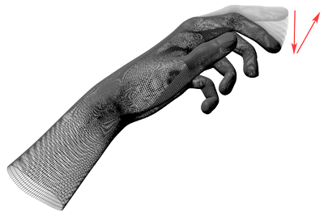

KeyTapGesture¶
Notice Gestures are deprecated in version 3.0 and may not behave the same as they did in earlier versions.
Attributes:
- class Leap.KeyTapGesture¶
Extends Gesture.
The KeyTapGesture class represents a tapping gesture by a finger.
A key tap gesture is recognized when the tip of a finger rotates down toward the palm and then springs back to approximately the original postion, as if tapping. The tapping finger must pause briefly before beginning the tap.
Important: To use key tap gestures in your application, you must enable recognition of the key tap gesture. You can enable recognition with:
controller.enable_gesture(Leap.Gesture.TYPE_KEY_TAP);
Key tap gestures are discrete. The KeyTapGesture object representing a tap always has the state, STATE_STOP. Only one KeyTapGesture object is created for each key tap gesture recognized.
You can set the minimum finger movement and velocity required for a movement to be recognized as a key tap as well as adjust the detection window for evaluating the movement using the config attribute of a connected Controller object. Use the following configuration keys to configure key tap recognition:
Key string Value type Default value Units Gesture.KeyTap.MinDownVelocity float 50 mm/s Gesture.KeyTap.HistorySeconds float 0.1 s Gesture.KeyTap.MinDistance float 3.0 mm The following example demonstrates how to set the key tap configuration parameters:
controller.config.set("Gesture.KeyTap.MinDownVelocity", 40.0) controller.config.set("Gesture.KeyTap.HistorySeconds", .2) controller.config.set("Gesture.KeyTap.MinDistance", 1.0) controller.config.save()
New in version 1.0.
- classmethod KeyTapGesture([gesture])¶
Constructs a KeyTapGesture object from an instance of the Gesture class.
for gesture in frame.gestures(): if gesture.type is Leap.Gesture.TYPE_KEY_TAP: key_tap = Leap.KeyTapGesture(gesture)
Parameters: gesture (Gesture) – The Gesture instance to specialize. This Gesture instance must be a KeyTapGesture object. If no argument is supplied, an invalid KeyTapGesture object is created. New in version 1.0.
- position¶
Type: Vector The position where the key tap is registered.
tap_point = key_tap.position
New in version 1.0.
- direction¶
Type: Vector The direction of finger tip motion. If the finger is stationary, at the time this gesture object is recorded, then the direction will be a zero vector.
tap_direction = key_tap.direction
New in version 1.0.
- progress¶
Type: float The progess value is always 1.0 for a key tap gesture.
New in version 1.0.
- class_type¶
Type: integer
The key tap gesture type designator: Gesture.TYPE_KEY_TAP
New in version 1.0.